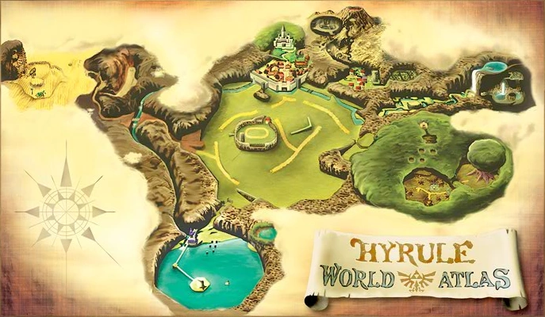
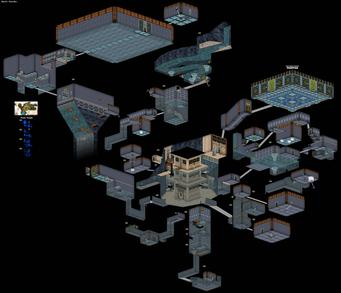

The Legend of Zelda Ocarina of Time, released on the N64 in 1996, was the first 3D entry in the series. It built upon the foundation of its predecessor The Legend of Zelda
A Link to the Past on the SNES which established the Zelda formula that would be iterated upon until Breath of the Wild.
Overworld and Exploration
Ocarina of Time's overworld may not seem that great compared to its 2D predecessors. While those games worlds felt densely populated, ocarina of time
can feel like a barren waseland. However, it is still very impressive. Each major area is conencted through Hyrule Field. At the time 3D games often
contained hub worlds which connected areas together. Because it is interconnected, Ocarina of Time's world feels more immersive. The freedom in the game
is even more restricted compared to previous entries. Many areas of the game cannot be accessed unless the player has reached a required item or has
reached a point in the story.

Dungeons
The dungeons in Ocarina of Time are among the best in the series. Each one is a experience which contains a perfect blend of puzzles and combat. Part of the
fun is figuring out the correct path through the dungeon. There are traditional locks and keys and the player's items serve as keys which give them the ability
to traverse parts of the dungeon which would previously have been inaccessible. In the game's most impressive dungeon the water temple, the player can
affect the layout of the dungeon by raising and lowering water levels. They can only access certain parts of the dungeon if the water level is raised
a certain amount and they must find all the keys to traverse the dungeon. The player must plan their route ahead of time before affecting the water levels.

Water Temple Map
Story
The Legend of Zelda: Ocarina of Time is widely regarded as an excellent implementation of the Hero’s Journey, a narrative structure defined by mythologist Joseph Campbell.
The journey begins with Link, an ordinary boy living in Kokiri Forest, receiving a call to adventure when the Great Deku Tree sends him to meet Princess Zelda.
This aligns with Campbell's stage where the hero is called to leave their ordinary world. Link receives aid from various mystical sources,
most notably the Ocarina of Time and the spiritual stones, which serve as talismans to help him on his journey. This corresponds with the hero
receiving support from a mentor or magical helper. Link's transition from child to adult when he pulls the Master Sword from its pedestal symbolizes
crossing the threshold into a new realm of adventure and responsibility. This is the point where the hero leaves the familiar world
and enters the unknown. As adult link steps out of the temple of time, the player notices the drastic changes to castle town. The once lively city
is now a dilapadated wasteland infested with scary redeads. Characters in the game expect more of link as an adult than when he was a child.
Link's return to his original time after ganondorf's defeat, as a child once again but with the knowledge and experience of his journey,
symbolizes his return with the elixir. He brings back the wisdom and maturity gained through his trials, which is the essence of the hero's journey.